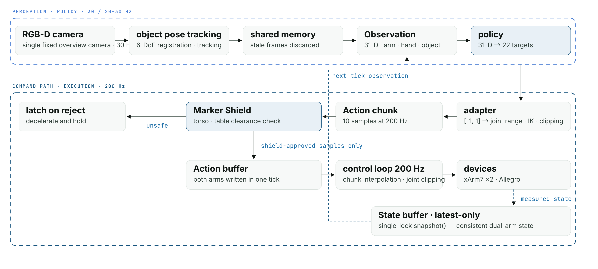
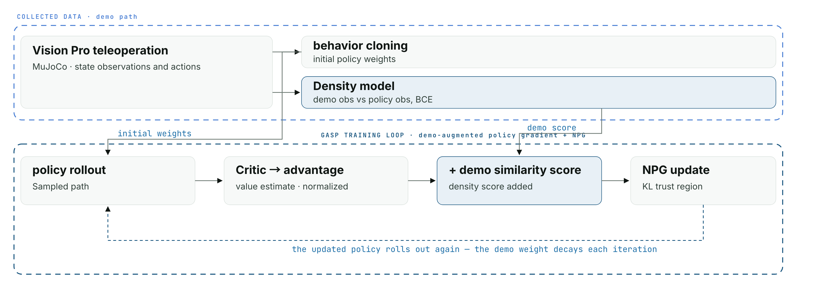
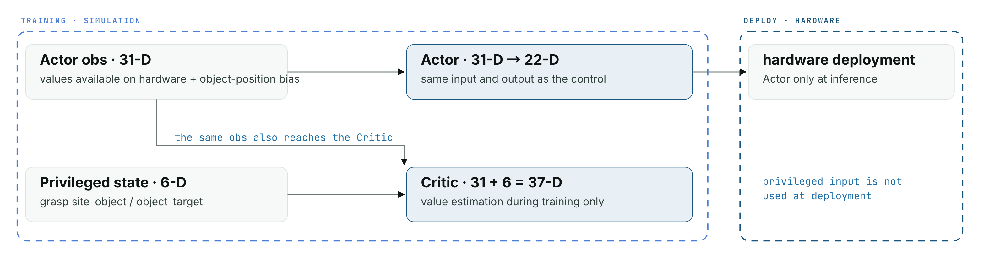

Multimodal Control, GASP Learning & Real-Robot Deployment

The shared control framework (Relocate policy inputs and right-arm execution shown): perception at 30 Hz, policy at 20 Hz, and every action chunk cleared by the marker shield before the arm and hand consume it at 200 Hz. Internal module names are generalized.
Overview
Vision, touch and force have to share one control loop, and each arrives on its own clock. This is the framework that holds them together — a single-arm system shown live at RoboWorld 2024, then rebuilt for a dual-arm platform where learned policies, teleoperation and a safety layer all run through one command path.
2024 — single arm
Asynchronous streams and I/O contention were what degraded real-time control, so the fix was structural: sensor acquisition and control computation went into separate processes, with state buffering absorbing the rate mismatch so the control side reads a current snapshot instead of blocking on a sensor. A policy based on DexMV with added tactile input (DexMVT) was deployed through this framework: 53% success on the Relocate task at RoboWorld 2024. This historical result is separate from the 2026 GASP policies.
The 2024 single-arm framework: the device loop never waits for the policy, and the policy never waits for a sensor — the state buffer between them is what decouples the two rates.
2026 — dual arm
Two xArm7 arms, a 16-DoF Allegro hand and a 6-DoF Inspire hand, fingertip tactile sensors and RGB cameras. Two arms are not twice one arm: state has to be consistent across arms, and a bad command is now something the robot can do to itself.
- Rate separation. Control 200 Hz, policy 20–30 Hz, teleoperation 60 Hz, over devices reporting at 250 / 333 Hz — the policy publishes chunks and the control loop interpolates, so a slow policy step cannot stall the arms.
- Consistency under one lock. A latest-only state buffer whose single-lock
snapshot()provides a consistent read of the stored arm states, and both arms' commands written in the same tick. - Sim/real parity. Every device is one interface with a real and a MuJoCo-backed implementation chosen by config, so identical control, observation and safety code runs in both — and tactile readings are normalized between them from a percentile calibration rather than by hand.
- Vision Pro teleoperation on the same path as the policy. Delta end-effector tracking for the arms, geometric retargeting of tracked finger frames onto the Allegro's 16 joints, blended with policy output by weight.
Imitation learning on the platform
These clips show policy execution on the shared platform. They are qualitative demonstrations; no repeated-trial success rate is reported for these rollouts.
Safety shield — torso and table
Sixty-four marker points are placed on the arms and hands: 48 on xArm7 links, eight on palms and eight on fingers. Before a candidate command is sent, forward kinematics in a separate MuJoCo data instance gives marker positions. Signed distances to oriented-box torso and table proxies determine whether the command can proceed.
The training environment and deployed framework share the distance-computation module. Margins are configured separately: 25 mm in training; warning 50, stop 30 and recovery 40 mm on hardware. Rejected commands trigger deceleration and a latched stop. This checks the specified torso/table proxies, not every possible self-collision pair.
GASP learning — right arm and hand
Apple Vision Pro teleoperation supplies state–action demonstrations in MuJoCo. Behavior cloning initializes the policy, followed by GASP training with demonstration-augmented policy gradients and a density model that distinguishes demonstration observations from policy observations. The learned action is rescaled from the policy's normalized output back to joint ranges and solved through IK into commands accepted by the same control framework.

| Interface | Dimension |
|---|---|
| Actor: end-effector pose (6), hand joints (16), and three relative-position vectors (9) | 31 |
| Action: end-effector target pose (6) and hand joint targets (16) | 22 |
| Asymmetric Critic: Actor observation plus two true relative-position vectors (6) | 37 |
The task is to grasp and relocate an object with the right xArm7 and right Allegro Hand. The 22-D output is not a set of 22 robot joints, and this experiment is not simultaneous dual-arm reinforcement learning.
Grasp-quality reward — GWS
The team learning setup adds a Ferrari–Canny ε term to approach, contact, lifting and target-reaching rewards. Contact positions, directions and friction coefficients define friction-cone edge forces; force and length-normalized torque form 6-D wrenches. The distance from the origin to the convex-hull boundary measures grasp quality when the origin is inside the hull. The metric uses unit normal forces and is a model-based reward, not a measured limit on external force.
| Stage | Reward term |
|---|---|
| Approach | −0.1 × hand–object distance |
| Contact and lift | +0.1 + 50 × lift height |
| Lift > 15 mm | +2 − 0.5 × hand–target distance − 1.5 × object–target distance |
| Object–target distance < 0.1 m, while lifted | +1 / (distance + 0.01) |
| Grasp quality during contact | +ε |
A team simulation comparison added the GWS term while keeping the other settings and seed held fixed: reaching an episode return of 25,000 took 1,200 iterations, compared with 8,000 without the term. This is a training-return threshold result; adding a reward term changes the return scale, so it is not by itself a measurement of task-success improvement or real-robot sample efficiency.


Asymmetric critic and real observations
On hardware, one egocentric RealSense D435i and FoundationPose provide object pose estimates. Training introduces a persistent object-position bias sampled within ±15 mm per axis, held fixed within each episode. This training setup uses the range to cover measured estimation offsets with a margin; it does not model every kind of temporal noise or tracking failure.
The Actor keeps the 31-D observation used at deployment. Only the Critic additionally sees the simulator’s true grasp-site–object and object–target relative positions (six values), for a 37-D input. The symmetric control uses the Actor observation for its Critic as well. The extra information supports value estimation during training; only the Actor is deployed.


Real-robot deployment — symmetric and asymmetric examples
The asymmetric policy was deployed on the real right arm and hand. These videos were recorded at different times and camera angles and illustrate the same task; they are not a repeated-trial success-rate comparison. Success rate, final target error and completion time have not yet been aggregated.